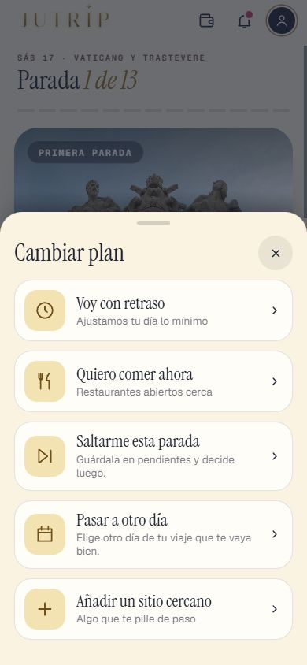
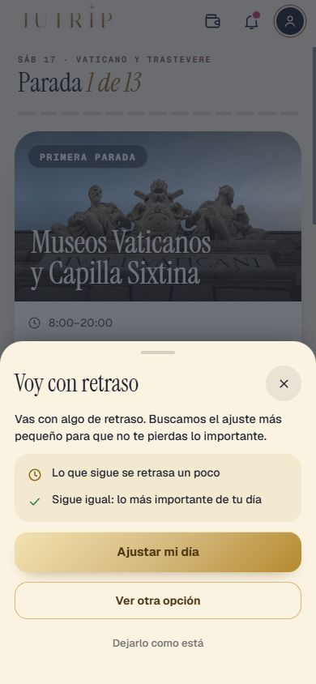
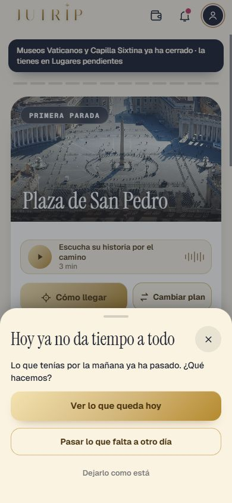
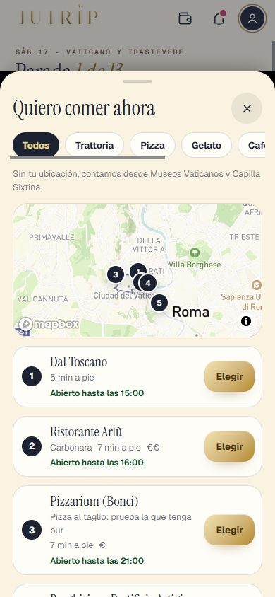
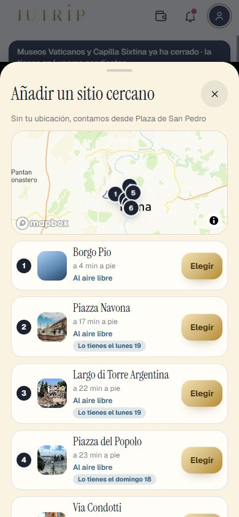
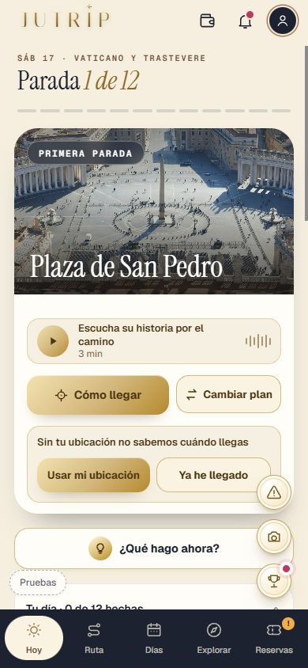
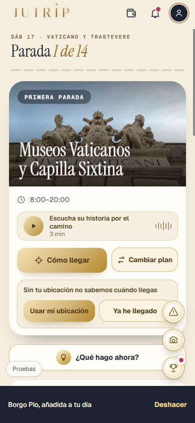
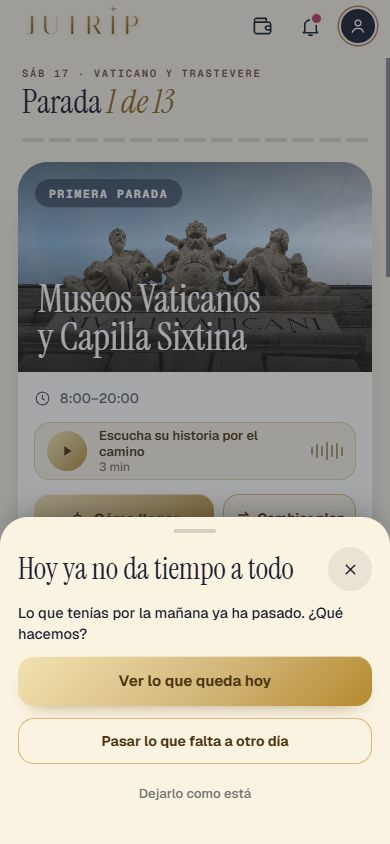

Todo lo que sigue es lo que cambia en la pantalla HOY. Detrás de cada cosa hay una frase en palabras sencillas de qué pasaba y qué pasa ahora. Lo que NO he podido hacer o dejé a medias está en docs/dias/DECISIONES_V43.md (para hablarlo mañana).
Antes: cada hoja tenía dos filas («Cambia: …» y «Se mantiene: …»), un botón que decía «Aplicar» y otro de «Volver a mi ruta original». Ahora: el texto de arriba, una sola caja suave (no se pulsa) con una línea e icono por cada cambio, el botón dorado que dice lo que hace («Pasarlo al domingo 18») y, abajo y pequeño, «Dejarlo como está». Nunca se protege una entrada cuya hora ya ha pasado y nunca se quita algo si se puede pasar a otro día.


Qué pasaba: a las 21:19 la app proponía quitar el Panteón para llegar a una entrada de las 10:00 que ya había pasado. Ahora: esa entrada no cuenta; primero se pasa lo que no cabe al mejor día donde quepa (abierto, cerca, sin llenarlo) y con su nombre («Pasamos el Panteón al domingo 18»); con «Ver otra opción», quitarlo (con «Mejor pasarlo al domingo 18»); y si no cabe en ningún día, solo quitarlo («no cabe en ningún otro día de tu viaje»). Con más de una hora de retraso, o al abrir HOY con la mañana pasada sin nada hecho, sale una vez la hoja «Hoy ya no da tiempo a todo».

El título dice «cenar» desde las 17:00; arriba los filtros de restaurantes de EXPLORAR (Todos enseña solo sitios para comer; gelato, café y aperitivo, solo con su filtro); «Cerca de ti» o «Sin tu ubicación, contamos desde {sitio}»; cada tarjeta con su número, cocina, minutos, precio y «Abierto hasta las 23:00» o «Cierra pronto» en naranja; el botón pasa de «Ir aquí» a «Elegir».

Subtítulos nuevos en el menú. Saltar una parada con reserva por llegar pregunta («Tienes reserva a las 10:00 para… Si te lo saltas, puedes perderla.» con «No, lo mantengo» y «Saltarlo igual»); si la reserva ya pasó, no pregunta. «Pasar a otro día» enseña la lista de días con el mejor arriba («Te lo recomendamos») y los días cerrados en gris («Cerrado ese día»), y después solo la mejor forma en ese día, con «Pasarlo al {día}» y «Elegir otro día». Respuesta a tu pregunta: [Ver otra opción] NO cambiaba de día: cambiaba entre «cabe» y «al final, en Si te sobra tiempo» del mismo día. Ahora ya no está ahí.
Qué pasaba: ofrecía sitios que ya estaban ese día (la Piazza Navona salía repetida), sin fotos y a veces cerrados a las 23:50. Ahora: se compara el sitio, no el nombre; solo sale lo abierto ahora según los horarios de los datos (de noche, lo al aire libre que no cierra y lo nocturno); mapa, número, foto, minutos y estado en cada fila; «Contiene recompensa» solo aquí y primero; si hay menos de 3, escalones: sitios de otros días del viaje («Lo tienes el lunes 19», se añaden hoy y el otro día no se toca), más lejos, y de noche los al aire libre; y si no hay nada, «A esta hora no queda nada abierto cerca.» con «Volver al alojamiento» y «Ver Explorar».

Qué pasaba: «Panteón ya ha cerrado…» se repetía cada vez que cambiabas de pestaña. Ahora: cada aviso sale una vez por viaje, día y sitio (se apunta en el móvil). Los que llevan «Deshacer» tapan el menú de abajo y salen todos en el mismo sitio, con el texto de lo que ha pasado («Piazza Navona, añadida a tu día»); los que no llevan «Deshacer» salen arriba, bajo la cabecera, se van solos a los 5 segundos o deslizándolos, y si hay varios se juntan en uno.


Filas compactas con [Otro día] y «···» (Recuperar hoy solo si sigue abierto, Ya lo visité y Quitar en rojo con «Deshacer»). [Pasar todos a otros días], en azul oscuro con dorado a propósito, enseña antes el resumen: cada uno a su mejor día; los que no caben se quedan en pendientes.

El horario dice «Cerrado ahora · abre a las 8:30» si lo está. Con ubicación: «A pie · 12 min desde ti» y «¿Ya estás aquí? Ya he llegado · Actualizar». Sin ubicación: «… desde tu alojamiento» y el recuadro «Sin tu ubicación no sabemos cuándo llegas» con [Usar mi ubicación] y [Ya he llegado]. «Escucha su historia por el camino» es ahora un reproductor (botón dorado de play y ondas). Si el viajero dijo que no a la ubicación, [Usar mi ubicación] abre «Activa tu ubicación» con los pasos de Safari o de Chrome. La lluvia: «aquí tienes una alternativa» solo si el día tiene plan de lluvia; si no, «Lleva paraguas o chubasquero»; y el aviso no sale si esa parte del día ya ha pasado.

El dorado de Design (135°, sin borde) se escribe una sola vez (src/components/ui/botonesOro.ts) y todos los botones de HOY lo usan. La prueba falla si algún botón lleva el borde #9A7228.
Pruebas de la V43 (24-nov-2026), con el Vite estable y la API (con DESTINOS_OCULTOS='-' para las de Lanzarote; normal para Jutrip): pruebaV43 (nueva) ............................ 41 comprobaciones · 0 fallos pruebaJutrip ................................. 130 · 0 pruebaV2Hoy .................................. 149 · 0 pruebaTandaHOY1_A ............................ 116 · 0 pruebaTandaHOY1_C ............................ 124 · 0 pruebaTandaHOY2_A ............................ 86 · 0 pruebaTandaHOY2_B ............................ 126 · 0 pruebaTandaHOY2_C ............................ 132 · 0 pruebaTandaHOY2b_E ........................... 142 · 0 pruebaV36C ................................... 122 · 0 pruebaTandaHOY2b_D ........................... 92 · 1 fallo: «el mirador no hereda la foto del Tempietto» (mira data/dias/roma/_fotos.json, que no es de esta tanda) pruebaV36_cliente ............................ 28 · 2 fallos (los mismos 2 que ya fallaban antes de la V42: no son de esta tanda) Las pruebas viejas de HOY (HOY1_A, HOY1_C, HOY2_A, HOY2_B, HOY2_C, HOY2b_D, HOY2b_E, V2Hoy) se actualizaron al formato nuevo (resumen único, «Dejarlo como está», «···» en pendientes, avisos que dicen lo que ha pasado, avisos sin Deshacer que se juntan, «Pasar a otro día» con una sola forma).